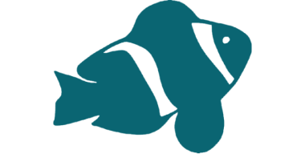
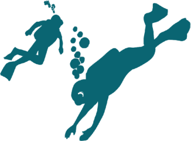

IMPACTO DOS PLÁSTICOS
A poluição plástica tem impactos severos na
vida animal, com os animais marinhos a serem
mais atingidos. A ingestão de plástico pode
causar obstrução do sistema digestivo, falsa
sensação de saciedade, inanição e morte
VIDA MARINHA EM RISCO
A vida marinha está sendo ameaçada por ações
humanas. como a poluição dos oceanos, a pesca
predatória e o aquecimento global. Milhares
de espécies estão em perigo, desde corais até
grandes animais como a tartaruga e baleias.
Proteger os oceanos é essencial para manter
o equilíbrio da natureza e garantiir o
futuro do nosso planeta.

DESPERTAR AZUL
Muitas pessoas ainda não sabem o quanto os
oceanos estão em perigo. Informar e conscientizar
é essencial para mudar isso. Atitudes simples,
como evitar plásticos descartáveis e respeitar
a vida marinha, já fazem diferença. Juntos,
podemos proteger os oceanos para as futuras gerações
